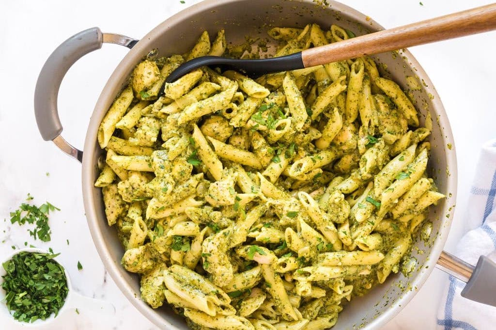

Chicken Pesto Pasta
Description
Chicken Pesto Pasta is chicken and penne in a basil pesto sauce.
This recipe is quick and easy, and requires very minimal prep and cook time
Ingedients:
- 8 oz. (half a 1 pound box) penne rigate pasta
- 1 tbsp. olive oil
- 1 lb. boneless skinless chicken breast cut into bite size chunks
- 1 tsp. Italian seasoning
- 1/4 tsp. salt
- 1/4 tsp. ground black pepper
- 3/4 cup basil pesto
Instructions
- Cook the pasta according to it’s package directions. Before draining the pasta, reserve 1/4 cup of the starchy cooking liquid.
- As the pasta cooks, heat the oil in a large skillet over medium-high heat for 2 minutes. Add the chicken, Italian seasoning, salt, and pepper.
Stir well to coat the chicken. Cook for 6-8 minutes, until the chicken is cooked through, stirring occasionally. Remove the skillet from the heat.
- Add the cooked and drained pasta and the pesto to the skillet with the chicken. Stir well.
- To loosen up the sauce, add some of the reserved starchy cooking liquid, if needed.